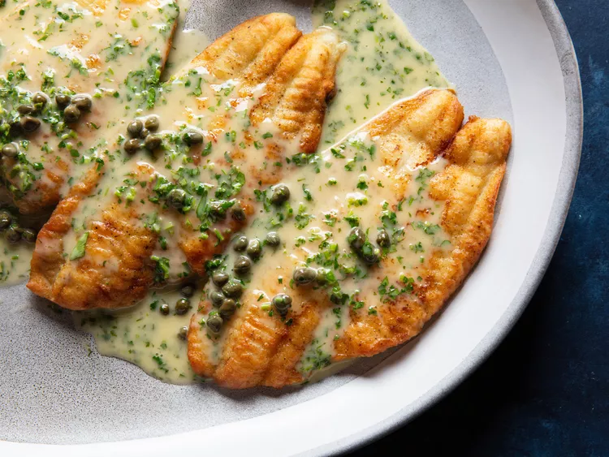

Fish Piccata

Description
Fish piccata is that rare dish where elegance and efficiency intersect.
The most important factor in this satisfyingly bright, buttery, briny dish
is tender, juicy white fish. To achieve this, cook your breaded fillets
almost entirely on one side. This allows for flavor-enhancing browning
without overcooking the fish. Then all that’s left is to focus on
emulsifying butter, wine, lemon juice, and capers into a quick, balanced
pan sauce.
Ingredients
- 4 fish fillets, about 150–180 g each
- ½ cup flour
- ½ tsp salt
- ½ tsp black pepper
- 2 tbsp olive oil
- 2 tbsp butter
- 3 cloves garlic, minced
- ½ cup chicken/vegetable stock or water
- ¼ cup fresh lemon juice
- 2 tbsp capers
- 2 tbsp butter, additional
- 2 tbsp chopped fresh parsley
- Lemon slices for serving
Steps
- Pat the fish fillets dry with paper towels.
- Mix flour, salt and black pepper.
-
Lightly coat each fish fillet in the flour mixture. Shake off excess.
- Heat olive oil and 2 tbsp butter in a large frying pan.
-
Fry the fish for about 3–4 minutes per side, depending on thickness.
Remove and set aside.
- In the same pan, add garlic and cook for about 30 seconds.
-
Add stock and lemon juice. Scrape the browned bits from the bottom of
the pan.
- Add capers and simmer for 2–3 minutes.
- Reduce the heat and whisk in the remaining 2 tbsp butter.
- Return the fish to the pan and spoon the sauce over it.
- Cook for another 1–2 minutes.
- Garnish with parsley and lemon slices.
- Serve with: mashed potatoes, rice, pasta or steamed vegetables.